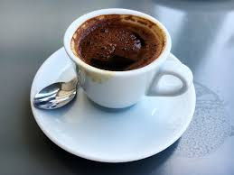
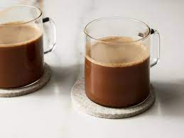

Espresso

leírás:
Az eszpresszó lényegében a kávébabban található anyagokból és vízből áll. Nincs benne más
hókuszpókusz, tartósítószer, ízfokozó stb. csak a kávé és a víz. Könnyen belátható, hogy a víz minősége nem
elhanyagolható fontosságú.
Mocha

leírás:
A mocha nem más, mint a café latte még édesebb, kakaóporral vagy csokisziruppal feljavított
változata, így elméletileg ez a kevésbé ismert ital lehetne a magyarok igazi kedvence.
Americano

leírás:
A II. Világháború ideje alatt Olaszországban állomásozó amerikai katonák hagyatékaként terjedt el az
“amerikai kávé” vagyis az Americano. Azóta bejárta a világot ez a kávékülönlegesség.
Napjainkban a legtöbb kávézóban megtalálható, mivel a közönség és a baristák egyik kedvencévé vált
Cappuccino

leírás:
Még mindig Olaszországban időzünk, a cappuccinót is a napfényes Itáliának köszönhetjük. Hagyományosan
három összetevője van, melyeket egyenlő arányban használnak: frissen főzött eszpresszó, forró tej, tejhab.
Önts egy adag kávét a csészébe, majd lassan add hozzá a felgőzölt, forró tejet és tejhabot! Díszítsd
fahéjjal, kakóval vagy sziruppal,és máris kész a cappuccino
Macchiato
leírás:
A macchiato (vagy caffe macchiato) klasszikus olasz ital, amelyet egy adag eszpresszóból készítenek,
és némi gőzölt tejjel „jelölnek meg”.